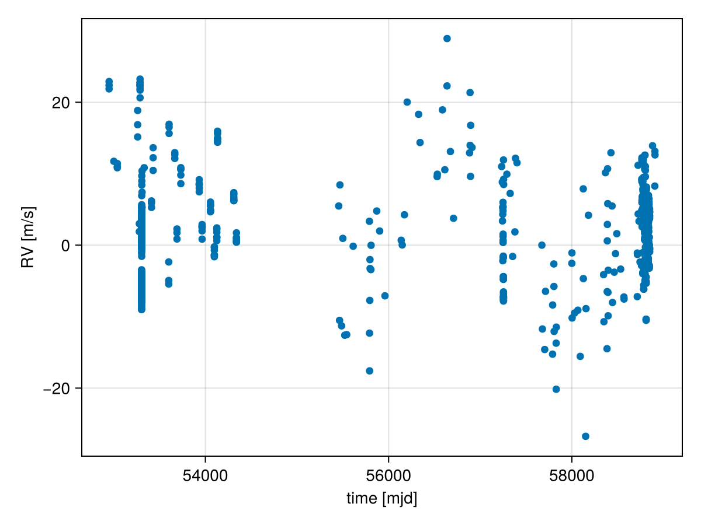
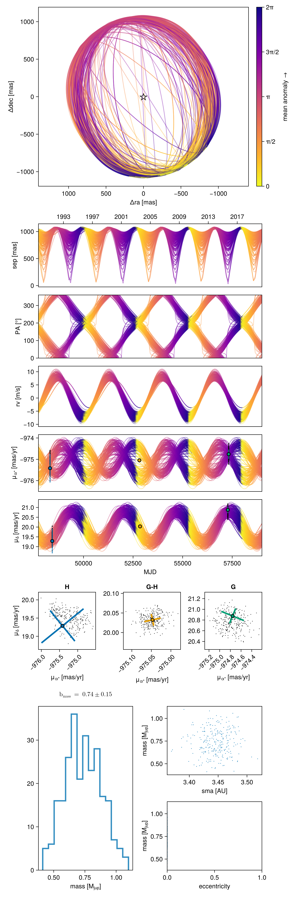
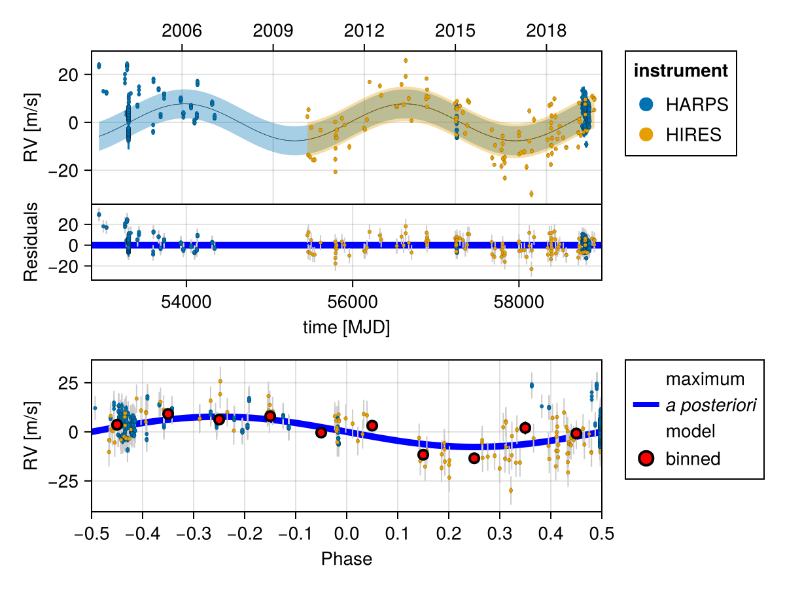
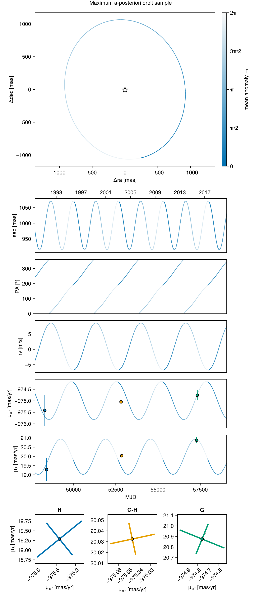
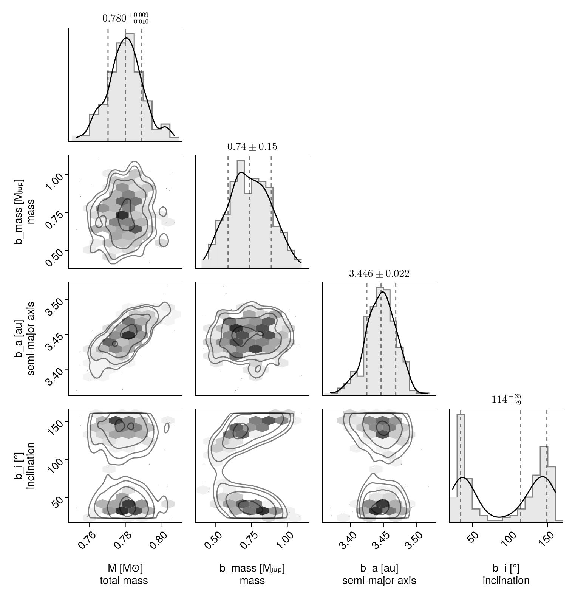

Fit RV and Astrometry
In this example, we will fit an orbit model to a combination of radial velocity and Hipparcos-GAIA proper motion anomaly for the star $\epsilon$ Eridani. We will use some of the radial velocity data collated in Mawet et al 2019.
Radial velocity modelling is supported in Octofitter via the extension package OctofitterRadialVelocity. To install it, run pkg> add OctofitterRadialVelocity
Datasets from two different radial velocity insturments are included and modelled together with separate jitters and instrumental offsets.
using Octofitter, OctofitterRadialVelocity, Distributions, PlanetOrbits, CairoMakie
gaia_id = 5164707970261890560
@planet b Visual{KepOrbit} begin
# For speed of example, we are fitting a circular orbit only.s
e = 0
ω=0.0
mass ~ Uniform(0, 3)
a~Uniform(2, 5)
i~Sine()
Ω~UniformCircular()
τ ~ UniformCircular(1.0)
P = √(b.a^3/system.M)
tp = b.τ*b.P*365.25 + 58849 # reference epoch for τ. Choose an MJD date near your data.
end # No planet astrometry is included since it has not yet been directly detected
# Convert from JD to MJD
# Data tabulated from Mawet et al
jd(mjd) = mjd - 2400000.5
# # You could also specify it manually like so:
# rvs = StarAbsoluteRVLikelihood(
# (;inst_idx=1, epoch=jd(2455110.97985), rv=−6.54, σ_rv=1.30),
# (;inst_idx=1, epoch=jd(2455171.90825), rv=−3.33, σ_rv=1.09), # units in meters/second
# ...
# )
# We will load in data from two RV
rvharps = OctofitterRadialVelocity.HARPS_RVBank_rvs("HD22049")
rvharps.table.inst_idx .= 1
rvhires = OctofitterRadialVelocity.HIRES_rvs("HD22049")
rvhires.table.inst_idx .= 2
rvs_merged = StarAbsoluteRVLikelihood(
cat(rvhires.table, rvharps.table,dims=1),
instrument_names=["HARPS", "HIRES"]
)
scatter(
rvs_merged.table.epoch[:],
rvs_merged.table.rv[:],
axis=(
xlabel="time [mjd]",
ylabel="RV [m/s]",
)
)
@system ϵEri begin
M ~ truncated(Normal(0.78, 0.01),lower=0)
plx ~ gaia_plx(;gaia_id)
pmra ~ Normal(-975, 10)
pmdec ~ Normal(20, 10)
# Radial velocity zero point per instrument
rv0_1 ~ Normal(0,10) # m/s
rv0_2 ~ Normal(0,10)
# Radial jitter per instrument.
jitter_1 ~ truncated(Normal(0,10),lower=0) # m/s
jitter_2 ~ truncated(Normal(0,10),lower=0)
# You can also set both instruments to the same jitter, eg by putting instead (with = not ~):
# jitter_2 = system.jitter_1
end HGCALikelihood(;gaia_id) rvs_merged b
# Build model
model = Octofitter.LogDensityModel(ϵEri)LogDensityModel for System ϵEri of dimension 15 with fields .ℓπcallback and .∇ℓπcallback
Now sample. You could use HMC via octofit or tempered sampling via octofit_pigeons. When using tempered sampling, make sure to start julia with julia --thread=auto. Each additional round doubles the number of posterior samples, so n_rounds=10 gives 1024 samples. You should adjust n_chains to be roughly double the Λ value printed out during sample, and n_chains_variational to be roughly double the Λ_var column.
using Pigeons
results, pt = octofit_pigeons(model, n_rounds=8, n_chains=10, n_chains_variational=10);┌ Info: Determined draw using pathfinder
│ chain_no = 1
└ initial_logpost = -2908.617599428681
┌ Info: Determined draw using pathfinder
│ chain_no = 2
└ initial_logpost = -3785.075969110791
┌ Info: Determined draw using pathfinder
│ chain_no = 3
└ initial_logpost = -2912.0750929418227
┌ Info: Determined draw using pathfinder
│ chain_no = 4
└ initial_logpost = -2936.3688714591112
┌ Info: Determined draw using pathfinder
│ chain_no = 5
└ initial_logpost = -2889.4099354141063
┌ Info: Determined draw using pathfinder
│ chain_no = 6
└ initial_logpost = -3005.581352177821
┌ Info: Determined draw using pathfinder
│ chain_no = 7
└ initial_logpost = -2934.1499587794783
┌ Info: Determined draw using pathfinder
│ chain_no = 8
└ initial_logpost = -2915.9220887973365
┌ Info: Determined draw using pathfinder
│ chain_no = 9
└ initial_logpost = -2932.6109945470225
┌ Info: Determined draw using pathfinder
│ chain_no = 10
└ initial_logpost = -2880.369058077178
┌ Info: Determined draw using pathfinder
│ chain_no = 11
└ initial_logpost = -2919.607700338893
┌ Info: Determined draw using pathfinder
│ chain_no = 12
└ initial_logpost = -3260.900243799341
┌ Info: Determined draw using pathfinder
│ chain_no = 13
└ initial_logpost = -2937.004558904213
┌ Info: Determined draw using pathfinder
│ chain_no = 14
└ initial_logpost = -2895.804626735056
┌ Info: Determined draw using pathfinder
│ chain_no = 15
└ initial_logpost = -2933.7758677080456
┌ Info: Determined draw using pathfinder
│ chain_no = 16
└ initial_logpost = -2989.8076572325854
┌ Info: Determined draw using pathfinder
│ chain_no = 17
└ initial_logpost = -2982.3123098116557
┌ Info: Determined draw using pathfinder
│ chain_no = 18
└ initial_logpost = -2851.583070843596
┌ Info: Determined draw using pathfinder
│ chain_no = 19
└ initial_logpost = -2896.3579124017588
┌ Info: Determined draw using pathfinder
│ chain_no = 20
└ initial_logpost = -2900.782150911321
────────────────────────────────────────────────────────────────────────────────────────────────────────────────────────
scans restarts Λ Λ_var time(s) allc(B) log(Z₁/Z₀) min(α) mean(α) min(αₑ) mean(αₑ)
────────── ────────── ────────── ────────── ────────── ────────── ────────── ────────── ────────── ────────── ──────────
2 0 2.74 2.43 16.1 3.85e+09 -2.66e+04 0 0.728 0.948 0.973
4 0 5.08 4.95 12.2 4.94e+09 -4.11e+03 0 0.472 0.926 0.945
8 0 7.01 4 19.7 7.83e+09 -3.59e+03 0 0.42 0.911 0.938
16 0 7.38 6.04 43.4 1.72e+10 -2.91e+03 8.37e-38 0.293 0.92 0.936
32 0 7.58 6.61 90.1 3.58e+10 -2.94e+03 1.04e-62 0.253 0.919 0.935
64 8 7.16 2.32 187 7.16e+10 -2.88e+03 0.00662 0.501 0.918 0.933
128 12 7.66 2.52 360 1.39e+11 -2.88e+03 0.0444 0.464 0.926 0.934
256 25 7.75 2.65 718 2.78e+11 -2.88e+03 0.052 0.452 0.923 0.936
────────────────────────────────────────────────────────────────────────────────────────────────────────────────────────We can now plot the results with a multi-panel plot:
octoplot(model, results, show_mass=true)
We can also plot just the RV curve from the maximum a-posteriori fit:
fig = OctofitterRadialVelocity.rvpostplot(model, results)
We can see what the visual orbit looks like for the maximum a-posteriori orbit:
i_max = argmax(results[:logpost][:])
fig = octoplot(
model,
results[i_max,:,:],
# change the colour map a bit:
colormap=Makie.cgrad([Makie.wong_colors()[1], "#FAFAFA"])
)
Label(fig[0,1], "Maximum a-posteriori orbit sample")
fig
And a corner plot:
using CairoMakie, PairPlots
octocorner(model, results, small=true)